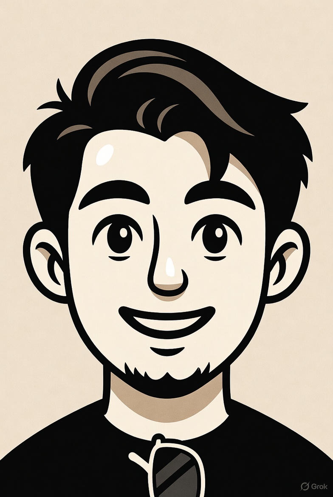

CNC Manufacturing Specialist & Builder
About Me
I design and implement practical manufacturing solutions—CNC tooling, prototypes, and production workflows—grounded in real shop-floor experience.
Currently, I work at the University of Southern California as an Experimental Machinist, managing the CNC lab and supporting engineering design teams and research labs across campus.
With deep expertise in CAD/CAM software and years of hands-on machining, I bring both technical precision and practical know-how to every project—what I like to call "the secret sauce."
I enjoy collaborating with cross-functional teams and sharing knowledge about CNC processes and best practices.
Outside the shop, I'm exploring AI-driven tools to boost productivity, tinkering with Arduinos, and diving into new technical topics.
This site showcases selected projects, experience, and ways to get in touch.
Featured Projects
Skills Snapshot
- CNC
- Design
- Machining Processes
- Python
- Automation